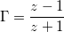

haben und ein Smith-Diagramm aus ihnen zeichnen möchten,
haben und ein Smith-Diagramm aus ihnen zeichnen möchten,Erfordert eine Auswahl von mindestens einer Y-Wertespalte und einer zugehörigen X-Spalte.
Standardmäßig werden X- und Y-Spalten als realer und imaginärer Teil von ZI betrachtet. (Zl=Real+Imag*j).
Wenn Sie Daten mit Betrag und Winkel (in Grad) für haben und ein Smith-Diagramm aus ihnen zeichnen möchten,
Wählen Sie .
oder
Klicken Sie auf die Schaltfläche Smith-Diagramm auf der Symbolleiste 2D-Grafiken.
Um das Smith-Diagramm anzupassen, verwenden Sie bitte die Dialoge Details Zeichnung und Achsen. Klicken Sie zusätzlich auf die Schaltfläche , um das Hilfsmittel Smith-Diagramm zu öffnen.
Die Gruppe Normieren
Erneutes Normieren des aktuellen Smith-Diagramms durch Eingabe oder Auswahl eines Faktors im Kombinationsfeld Faktor. Klicken Sie auf Normieren, um die Normierung durchzuführen.
Die Gruppe Aktueller aktiver Datensatz
Wenn Sie mehrere Datensätze in das Smith Diagramm gezeichnet haben, wirken die Schaltflächen Konvertierung der Daten in Mag / Winkel und Daten reinterpretieren als Mag / Winkel auf das aktive Diagramm. Sie können das aktive Diagramm im Smith Diagramm aus dem Menü oder durch Auswahl des Diagrammsymbol in der Legende ändern. Um das Dialogfeld Smith Diagramm mit diesen Änderungen zu aktualisieren, klicken Sie auf die Schaltfläche Aktualisieren in dem Dialogfeld. (Hinweis: R = realer Teil, X = imaginärer Teil)
Die Schaltfläche Konvertierung der Daten in Mag / Winkel
Klicken Sie auf diese Schaltfläche, um das aktive Diagramm in das Format Mag / Winkel zu konvertieren und die Daten in das Quellworksheet zu schreiben.  = Mag*exp(j*Angle)
Die Schaltfläche Daten reinterpretieren als Mag / Winkel
Klicken Sie auf diese Schaltfläche, um das aktive Diagramm als Format Mag / Winkel zu behandeln und die Daten in das Format R / X umzuwandeln. Die Daten werden dann neu gezeichnet.
Die Schaltfläche R Achse rückwärts
Klicken Sie auf diese Schaltfläche, um die reelle Achse des Smith Diagramms umzukehren.
Die Gruppe Konstanter SWR Kreis
Mit einer angegebenen Position eines Punktes wählen Sie bitte die Punktdichte des Kreises und die Linienfarbe aus. Klicken Sie auf die Schaltfläche Hinzufügen, um einen konstanten SWR Kreis durch den gegebenen Punkt hinzuzufügen.
Das Smith Diagramm wurde aus der Vorlage SMITHCHT.OTP (im Origin-Programmordner installiert) erstellt.
 imag 1）abgeschnitten.
imag 1）abgeschnitten.